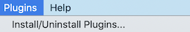

Finding and installing a napari plugin¶
napari plugins are Python packages distributed on the Python Package Index
(PyPI), and annotated with the tag Framework :: napari. The
napari hub uses this data, together with additional
metadata, to produce a more user friendly way to find napari plugins.
Similarly, plugins annotated on PyPI with Framework :: napari are listed in
the Plugins > Install/Uninstall Plugins menu within napari.
Finding plugins on the napari hub¶
The napari hub hosts information about all plugins. You can browse, search, and filter to find plugins that fit your needs. You can also share links to specific search results and plugins.
Installing plugins with napari¶
All PyPI packages annotated with the Framework :: napari tag can be installed
directly from within napari:
From the “Plugins” menu, select “Install/Uninstall Plugins…”.

In the resulting window that opens, where it says “Install by name/URL”, type the name of the plugin you want to install.
Click the “Install” button next to the input bar.